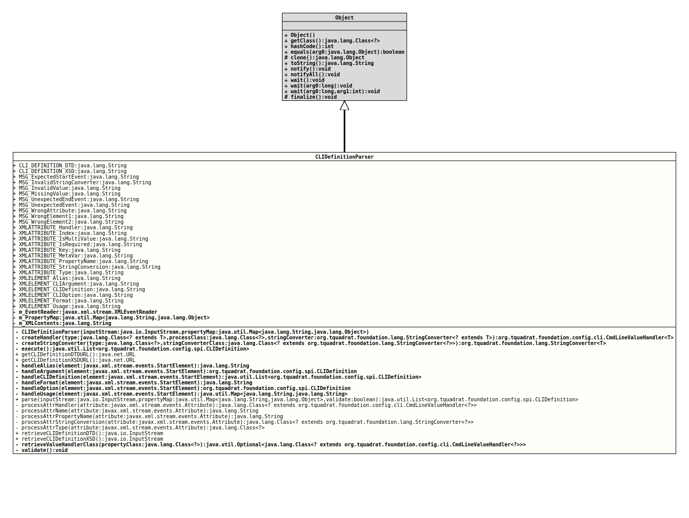

Class CLIDefinitionParser
- Author:
- Thomas Thrien (thomas.thrien@tquadrat.org)
- Version:
- $Id: CLIDefinitionParser.java 1120 2024-03-16 09:48:00Z tquadrat $
- Since:
- 0.0.1
- UML Diagram
-

UML Diagram for "org.tquadrat.foundation.config.internal.CLIDefinitionParser"
{kind=link}
-
Nested Class Summary
Nested ClassesModifier and TypeClassDescriptionprivate static classAn implementation ofXMLResolverfor this parser.static final classAn implementation ofLocation. -
Field Summary
FieldsModifier and TypeFieldDescriptionstatic final StringThe name for the CLI definition DTD file: "CLIDefinition.dtd".static final StringThe name for the CLI definition XSD file: "CLIDefinition.xsd".private final XMLEventReaderThe XML event reader that provides the CLI definition.The property map.private final StringThe XML stream.static final StringThe message indicating that a start element was expected, but another event was encountered: "Start event expected: %s".static final StringThe message indicating that a providedStringConverterimplementation is invalid: "Invalid StringConverter implementation: %s".static final StringThe message indicating that an attribute value is invalid: "Value \'%2$s\' for attribute \'%1$s\' is invalid".static final StringThe message indicating that an attribute does not have a value: "Value for attribute \'%1$s\' is missing".static final StringThe message indicating that a specific end element was expected, but another end element was encountered: "Unexpected End event: %1$s\n\'%3$s\' does not match the expected \'%2$s\'\n".static final StringThe message indicating that an unexpected event was encountered: "Unexpected event: %1$s".static final StringThe message indicating that an unexpected attribute was encountered: "Unexpected attribute: %1$s".static final StringThe message indicating that an unexpected start element was encountered: "Expected \'%1$s\', but encountered \'%2$s\'".static final StringThe message indicating that an unexpected start element was encountered: "Encountered \'%2$s\' while expected one of: %1$s".static final StringThe name for the XML attribute 'handler': "handler".static final StringThe name for the XML attribute 'index': "index".static final StringThe name for the XML attribute 'isMultiValue': "isMultiValue".static final StringThe name for the XML attribute 'isRequired': "isRequired".static final StringThe name for the XML attribute 'key': "key".static final StringThe name for the XML attribute 'metaVar': "metaVar".static final StringThe name for the XML attribute 'propertyName': "propertyName".static final StringThe name for the XML attribute 'stringConversion': "stringConversion".static final StringThe name for the XML attribute 'type': "type".static final StringThe name for the XML element 'alias': "alias".static final StringThe name for the XML element 'argument': "argument".static final StringThe name for the XML element 'cliDefinition': "cliDefinition".static final StringThe name for the XML element 'option': "option".static final StringThe name for the XML element 'format': "format".static final StringThe name for the XML element 'usage': "usage". -
Constructor Summary
ConstructorsModifierConstructorDescriptionprivateCLIDefinitionParser(InputStream inputStream, Map<String, Object> propertyMap) Creates a newCLIDefinitionParserinstance. -
Method Summary
Modifier and TypeMethodDescriptionprivate final <T> CmdLineValueHandler<T> createHandler(Class<? extends T> type, Class<?> processClass, StringConverter<? extends T> stringConverter) Creates the instance for the command line value handler based on the given class for the type and class for the handler implementation.private final <T> StringConverter<T> createStringConverter(Class<?> type, Class<? extends StringConverter<?>> stringConverterClass) Creates the instance for the string converter based on the given class for the type and class for the string converter implementation.private final List<CLIDefinition> execute()Executes the parsing.static final URLRetrieves the URL for the CLI definition DTD file from the resources.static final URLRetrieves the URL for the CLI definition XSD file from the resources.private final StringhandleAlias(StartElement element) Handles the "alias" element.private CLIDefinitionhandleArgument(StartElement element) Handles the "argument" element.private final List<CLIDefinition> handleCLIDefinition(StartElement element) Handles the "cliDefinition" element.private final StringhandleFormat(StartElement element) Handles the "format" element.private final CLIDefinitionhandleOption(StartElement element) Handles the "option" element.handleUsage(StartElement element) Handles the "usage" element.static final List<CLIDefinition> parse(InputStream inputStream, Map<String, Object> propertyMap, boolean validate) Parses the givenInputStream.private static final Class<? extends CmdLineValueHandler<?>> processAttrHandler(Attribute attribute) Processes the attribute "handler".private static final StringprocessAttrName(Attribute attribute) Processes the attribute "name".private static final StringprocessAttrPropertyName(Attribute attribute) Processes the attribute "propertyName".private static final Class<? extends StringConverter<?>> processAttrStringConversion(Attribute attribute) Processes the attribute "stringConversion".private static final Class<?> processAttrType(Attribute attribute) Processes the attribute "type".static final InputStreamRetrieves the CLI definition DTD file from the resources.static final InputStreamRetrieves the CLI definition XSD file from the resources.private final Optional<Class<? extends CmdLineValueHandler<?>>> retrieveValueHandlerClass(Class<?> propertyClass) Retrieves the class for the value handler if the property class is not anenumtype.private final voidvalidate()Validates the given XML.
-
Field Details
-
CLI_DEFINITION_DTD
The name for the CLI definition DTD file: "CLIDefinition.dtd".- See Also:
-
CLI_DEFINITION_XSD
The name for the CLI definition XSD file: "CLIDefinition.xsd".- See Also:
-
MSG_ExpectedStartEvent
The message indicating that a start element was expected, but another event was encountered: "Start event expected: %s".- See Also:
-
MSG_InvalidStringConverter
The message indicating that a providedStringConverterimplementation is invalid: "Invalid StringConverter implementation: %s".- See Also:
-
MSG_InvalidValue
The message indicating that an attribute value is invalid: "Value \'%2$s\' for attribute \'%1$s\' is invalid".- See Also:
-
MSG_MissingValue
The message indicating that an attribute does not have a value: "Value for attribute \'%1$s\' is missing".- See Also:
-
MSG_UnexpectedEndEvent
The message indicating that a specific end element was expected, but another end element was encountered: "Unexpected End event: %1$s\n\'%3$s\' does not match the expected \'%2$s\'\n".- See Also:
-
MSG_UnexpectedEvent
The message indicating that an unexpected event was encountered: "Unexpected event: %1$s".- See Also:
-
MSG_WrongAttribute
The message indicating that an unexpected attribute was encountered: "Unexpected attribute: %1$s".- See Also:
-
MSG_WrongElement1
The message indicating that an unexpected start element was encountered: "Expected \'%1$s\', but encountered \'%2$s\'".- See Also:
-
MSG_WrongElement2
The message indicating that an unexpected start element was encountered: "Encountered \'%2$s\' while expected one of: %1$s".- See Also:
-
XMLATTRIBUTE_Handler
The name for the XML attribute 'handler': "handler".- See Also:
-
XMLATTRIBUTE_Index
The name for the XML attribute 'index': "index".- See Also:
-
XMLATTRIBUTE_IsMultiValue
The name for the XML attribute 'isMultiValue': "isMultiValue".- See Also:
-
XMLATTRIBUTE_IsRequired
The name for the XML attribute 'isRequired': "isRequired".- See Also:
-
XMLATTRIBUTE_Key
The name for the XML attribute 'key': "key".- See Also:
-
XMLATTRIBUTE_MetaVar
The name for the XML attribute 'metaVar': "metaVar".- See Also:
-
XMLATTRIBUTE_PropertyName
The name for the XML attribute 'propertyName': "propertyName".- See Also:
-
XMLATTRIBUTE_StringConversion
The name for the XML attribute 'stringConversion': "stringConversion".- See Also:
-
XMLATTRIBUTE_Type
The name for the XML attribute 'type': "type".- See Also:
-
XMLELEMENT_Alias
The name for the XML element 'alias': "alias".- See Also:
-
XMLELEMENT_CLIArgument
The name for the XML element 'argument': "argument".- See Also:
-
XMLELEMENT_CLIDefinition
The name for the XML element 'cliDefinition': "cliDefinition".- See Also:
-
XMLELEMENT_CLIOption
The name for the XML element 'option': "option".- See Also:
-
XMLELEMENT_Format
The name for the XML element 'format': "format".- See Also:
-
XMLELEMENT_Usage
The name for the XML element 'usage': "usage".- See Also:
-
m_EventReader
The XML event reader that provides the CLI definition. -
m_PropertyMap
The property map. -
m_XMLContents
The XML stream.
-
-
Constructor Details
-
CLIDefinitionParser
private CLIDefinitionParser(InputStream inputStream, Map<String, Object> propertyMap) throws XMLStreamException, IOExceptionCreates a newCLIDefinitionParserinstance.- Parameters:
inputStream- The input stream that should contain the XML CLI definition.propertyMap- The target data structure for the values from the command line.- Throws:
XMLStreamException- Cannot create aXMLEventReaderinstance for the given input stream.IOException- Cannot read the given input stream.
-
-
Method Details
-
createHandler
private final <T> CmdLineValueHandler<T> createHandler(Class<? extends T> type, Class<?> processClass, StringConverter<? extends T> stringConverter) throws IllegalArgumentException Creates the instance for the command line value handler based on the given class for the type and class for the handler implementation. If
processClassisnull, the method will search for a specialised handler class in the internal registry; if none can be found, andstringConverteris notnull, it creates an instance ofSimpleCmdLineValueHandlerwith it. But ifstringConverterisnull, an exception will be thrown.If
processClassis notnull, it has to be a class that implementsCmdLineValueHandler. In that case that class will be instantiated.- Type Parameters:
T- The type of the property the set.- Parameters:
type- The class for the property to set.processClass- This is either the handler class ornull.stringConverter- TheStringConverterinstance for the property; can benull.- Returns:
- The command line value handler instance.
- Throws:
IllegalArgumentException- A command line value handler instance cannot be created.
-
createStringConverter
private final <T> StringConverter<T> createStringConverter(Class<?> type, Class<? extends StringConverter<?>> stringConverterClass) Creates the instance for the string converter based on the given class for the type and class for the string converter implementation. If
stringConverterClassisnull, the method will search for an implementation class in the internal registry; if none can be found,nullwill be returned.- Type Parameters:
T- The type of the property to convert.- Parameters:
type- The class for the property to convert.stringConverterClass- The String converter class ornull.- Returns:
- The String converter instance.
-
execute
Executes the parsing.- Returns:
- The parsed CLI definition.
- Throws:
XMLStreamException- Cannot parse the given input stream.
-
getCLIDefinitionDTDURL
Retrieves the URL for the CLI definition DTD file from the resources.- Returns:
- The URL for the file.
-
getCLIDefinitionXSDURL
Retrieves the URL for the CLI definition XSD file from the resources.- Returns:
- The URL for the file.
-
handleAlias
Handles the "alias" element.- Parameters:
element- The current element.- Returns:
- The option alias.
- Throws:
XMLStreamException- A problem occurred while parsing the element.
-
handleArgument
Handles the "argument" element.- Parameters:
element- The current element.- Returns:
- The parsed CLI definition.
- Throws:
XMLStreamException- A problem occurred while parsing the element.
-
handleCLIDefinition
private final List<CLIDefinition> handleCLIDefinition(StartElement element) throws XMLStreamException Handles the "cliDefinition" element.- Parameters:
element- The current element.- Returns:
- The parsed CLI definition.
- Throws:
XMLStreamException- A problem occurred while parsing the element.
-
handleFormat
Handles the "format" element.- Parameters:
element- The current element.- Returns:
- The format.
- Throws:
XMLStreamException- A problem occurred while parsing the element.
-
handleOption
Handles the "option" element.- Parameters:
element- The current element.- Returns:
- The parsed CLI definition.
- Throws:
XMLStreamException- A problem occurred while parsing the element.
-
handleUsage
Handles the "usage" element.- Parameters:
element- The current element.- Returns:
- The usage and the usage key.
- Throws:
XMLStreamException- A problem occurred while parsing the element.
-
parse
public static final List<CLIDefinition> parse(InputStream inputStream, Map<String, Object> propertyMap, boolean validate) throws XMLStreamException, IOExceptionParses the givenInputStream.- Parameters:
inputStream- The input stream that should contain the XML CLI definition.propertyMap- The target data structure for the values from the command line.validate-trueif the given XML should be validated against the schemaCLIDefinition.xsdprevious to parsing it,falseif the validation can be omitted.- Returns:
- The parsed CLI definition.
- Throws:
XMLStreamException- Cannot parse the given input stream.IOException- Cannot read the given input stream.
-
processAttrHandler
private static final Class<? extends CmdLineValueHandler<?>> processAttrHandler(Attribute attribute) throws XMLStreamException Processes the attribute "handler".- Parameters:
attribute- The attribute.- Returns:
- The handler class.
- Throws:
XMLStreamException- The attribute is somehow invalid.
-
processAttrName
Processes the attribute "name".- Parameters:
attribute- The attribute.- Returns:
- The property name.
- Throws:
XMLStreamException- The attribute is somehow invalid.
-
processAttrPropertyName
Processes the attribute "propertyName".- Parameters:
attribute- The attribute.- Returns:
- The property name.
- Throws:
XMLStreamException- The attribute is somehow invalid.
-
processAttrStringConversion
private static final Class<? extends StringConverter<?>> processAttrStringConversion(Attribute attribute) throws XMLStreamException Processes the attribute "stringConversion".- Parameters:
attribute- The attribute.- Returns:
- The
StringConverterimplementation class. - Throws:
XMLStreamException- The attribute is somehow invalid.
-
processAttrType
Processes the attribute "type".- Parameters:
attribute- The attribute.- Returns:
- The class for the type.
- Throws:
XMLStreamException- The attribute is somehow invalid.
-
retrieveCLIDefinitionDTD
Retrieves the CLI definition DTD file from the resources.- Returns:
- The input stream for the file.
-
retrieveCLIDefinitionXSD
Retrieves the CLI definition XSD file from the resources.- Returns:
- The input stream for the file.
-
retrieveValueHandlerClass
private final Optional<Class<? extends CmdLineValueHandler<?>>> retrieveValueHandlerClass(Class<?> propertyClass) Retrieves the class for the value handler if the property class is not an
enumtype.enumtypes have to be handled separately.- Parameters:
propertyClass- The class of the property that should be set.- Returns:
- An instance of
Optionalthat holds the effective handler class if the property class is not anenum.
-
validate
Validates the given XML.- Throws:
XMLStreamException- The validation failed.IOException- Cannot read the given input stream.
-